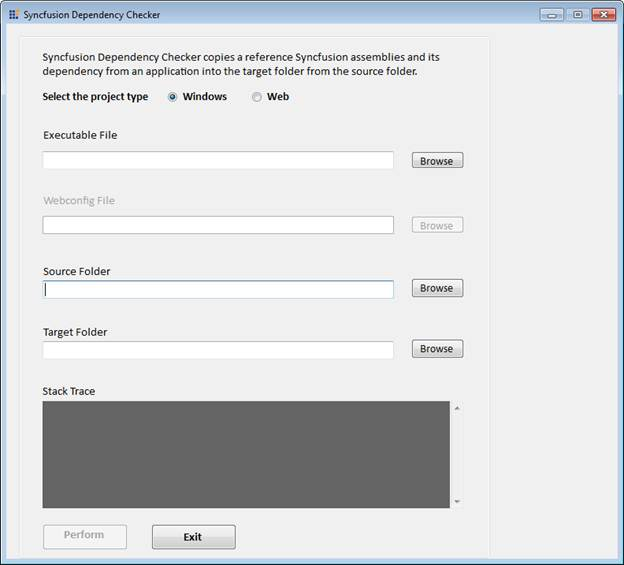

Syncfusion Dependency Checker enables you to copy the reference Syncfusion assemblies and its dependency from an application Source folder into the target folder.
Launching Syncfusion Dependency Checker
1. Click Start > All Program > Syncfusion > Essential Studio x.x.x.x > Tools > Dependency Checker > Syncfusion Dependency Checker.

Figure 138: Syncfusion Dependency Checker
 Note: You can also open the Syncfusion Dependency
Checker from the following location:
Note: You can also open the Syncfusion Dependency
Checker from the following location:
{Installed location}\Syncfusion\Essential Studio\9.4.0.62\Utilities\Dependency Checker
2. Select the required exe created using Essential Studio in the Executable File field.
3. Select the assemble folder of the version used to create the application in Source Folder fields.
4. Select the folder where you want to copy assemblies in the Target Folder field.
5. Click Perform. The Utility will copy the reference Syncfusion assemblies and its dependency into the target folder